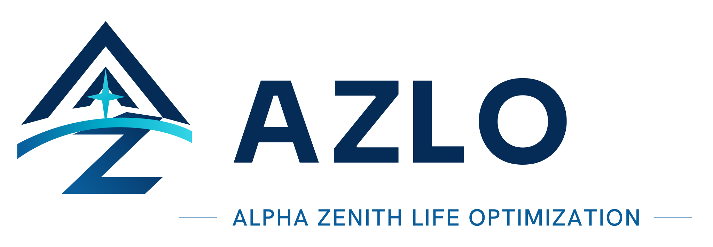
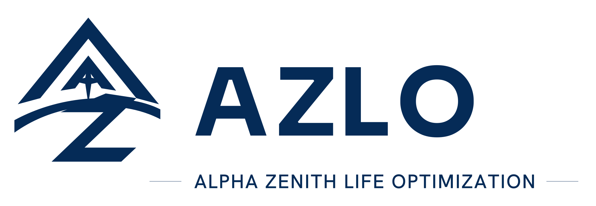

<!doctype html>
<html lang="pt-BR">
<meta charset="utf-8">
<title>AZLO - Revisao 100% Vetorial</title>
<style>
  body { margin: 0; font: 14px Arial, sans-serif; color: #111827; background: #f2fafc; }
  section { padding: 28px; border-bottom: 1px solid #d8e6ec; }
  h1, h2 { margin: 0 0 16px; }
  .light { background: white; }
  .dark { background: #052B57; color: white; }
  img { display: block; max-width: 100%; height: auto; }
  .symbol { width: 280px; }
</style>
<section class="light"><h1>AZLO assinatura positiva - 100% vetorial</h1></section>
<section class="dark"><h2>AZLO assinatura negativa - 100% vetorial</h2></section>
<section class="light"><h2>AZLO assinatura monocromatica - 100% vetorial</h2></section>
<section class="light"><h2>Simbolo isolado positivo</h2></section>
<section class="dark"><h2>Simbolo isolado negativo</h2></section>
</html>
